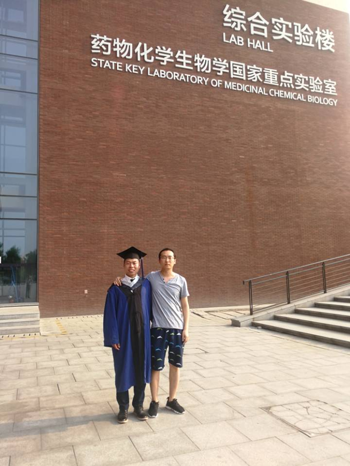
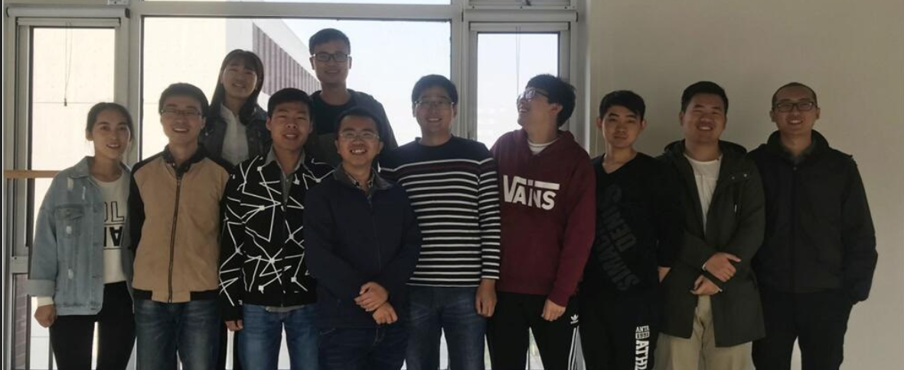
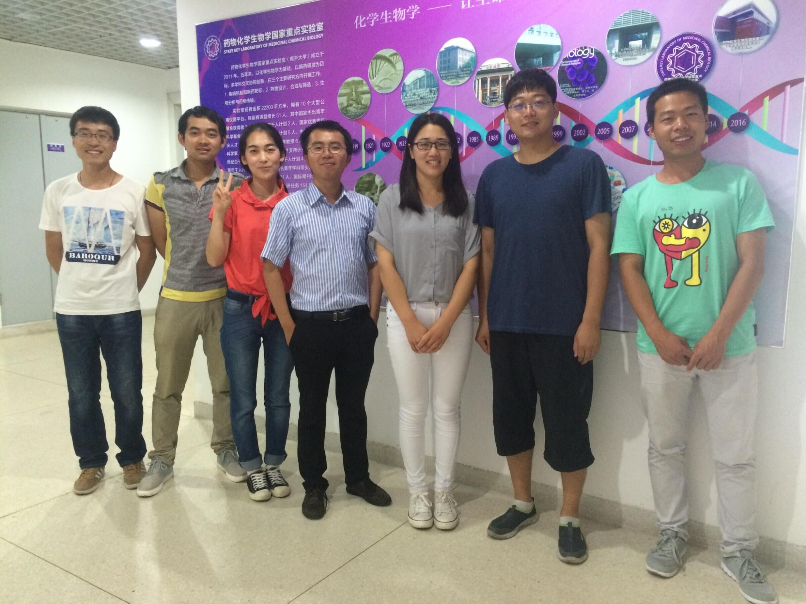

Gallery & News
Recruitment of PhD and Master students
Ideal PhD student candidate should:
•Aim to achieve high standard during PhD and publish
high impact papers
•Have positive and enthusiastic attitude and highly
self-motivated
•Have strong background in genetics, stem cell
biology, molecular biology or bioinformatics
•Have excellent communication and problem solving
skills
•Be able to work hard and focus in the research
field
•Publish at least one paper as first author or
co-first author during Master degree
Ideal Master student candidate should:
•Have passed CET-4 and CET-6 English exam with good
grade
•Have good grades in university and university
entrance exam
•Be highly interested in molecular biology research
or bioinformatics
•Aim to pursue PhD after master degree
•Be able to work hard and focus in the research
field
•Have good communication skills
•Have hands-on experience in molecular biology lab
is a plus
Gallery
 2018-Group
photo
2018-Group
photo
2019-Ruiqing Chen's graduation
2017-Group photo
2016-Group photo